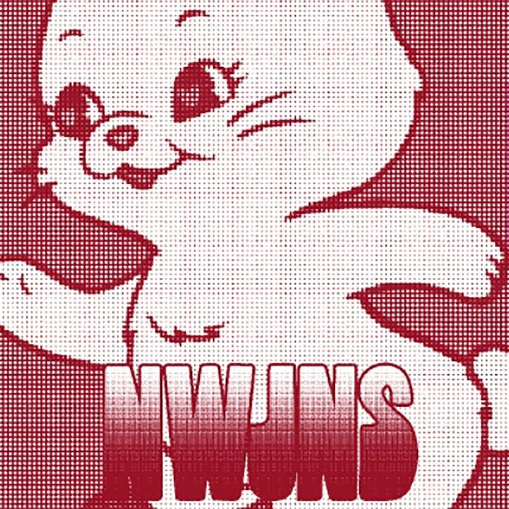
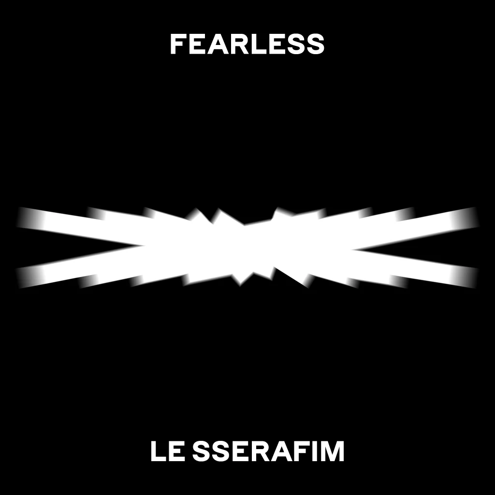
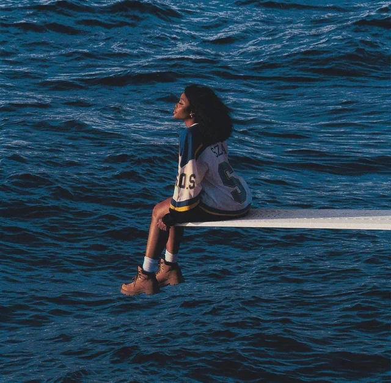

- OMG - NewJeans
- Ditto - NewJeans
- Sour Grapes - LE SSERAFIM
- Good parts (when the quality is bad but I am) - LE SSERAFIM
- Kill Bill - SZA

Lyrics:
이 노래는 it's about you baby
Only you
You you you
You you you you
내가 힘들 때
울 것 같을 때
기운도 이젠
나지 않을 때
It's you 날 걱정하네
It's you 날 웃게하네
말 안 해도 돼
Boy what do you say
(They keep on asking me, “who is he?”)
멀리든 언제든지 달려와
(They keep on asking me, “who is he?”)
바쁜 척도 없이 넌 나타나
(They keep on asking me, “who is he?”)
이게 말이 되니 난 물어봐
(They keep on asking me, “who is he?”)
너는 말야
He's the one that's living in my system baby
Oh my oh my God
예상했어 나
I was really hoping
That he will come through
Oh my oh my God
단 너뿐이야
Asking all the time about what I should do
No I can never let him go
너만 생각나 24
난 행운아야 정말로 I know, I know
널 알기 전까지는 나
의미 없었어 전부 다
내 맘이 끝이 없는 걸 I know, I know
I'm going crazy right?
어디서든
몇 번이든
There ain't nothing else that I would hold on to
I hear his voice
Through all the noise
잠시라도 내 손 놓지 마 no, no
걱정 없잖아
'Cause I got someone
혼자라도 괜찮아
'Cause I love someone
(They keep on asking me, “who is he?”)
멀리든 언제든지 달려와
(They keep on asking me, “who is he?”)
바쁜 척도 없이 넌 나타나
(They keep on asking me, “who is he?”)
이게 말이 되니 난 물어봐
(They keep on asking me, “who is he?”)
너는 말야
He's the one that's living in my system baby
Oh my oh my God
예상했어 나
I was really hoping
That he will come through
Oh my oh my God
단 너뿐이야
Asking all the time about what I should do
No I can never let him go
너만 생각나 24
난 행운아야 정말로 I know, I know
널 알기 전까지는 나
의미 없었어 전부 다
내 맘이 끝이 없는 걸 I know, I know
너와 나
My heart is glowing
It's glowing up
너랑만 있으면 무서울 게 없어
가득 메워진, 다 메워진 (붉어진)
My heart is glowing, it'd be glowing
'Cause he
Oh my oh my God
예상했어 나
I was really hoping
That he will come through
Oh my oh my God
단 너뿐이야
Asking all the time about what I should do
No I can never let him go
He's right there for me 24
난 행운아야 정말로 I know, I know
널 알기 전까지는 나
의미 없었어 전부 다
어떡해
My heart is glowing, it's glowing
My heart is glowing up
So I can't sleep at night

Lyrics:
Woo woo woo woo ooh
Woo woo woo woo
Stay in the middle
Like you a little
Don't want no riddle
말해줘 say it back
Oh say it ditto
아침은 너무 멀어
So say it ditto
훌쩍 커버렸어
함께한 기억처럼
널 보는 내 마음은
어느새 여름 지나 가을
기다렸지 all this time
Do you want somebody
Like I want somebody
날 보고 웃었지만
Do you think about me now yeah
All the time yeah
All the time
I got no time to lose
내 길었던 하루
난 보고 싶어
Ra-ta-ta-ta 울린 심장 (Ra-ta-ta-ta)
I got nothing to lose
널 좋아한다고 wooah wooah wooah
Ra-ta-ta-ta 울린 심장 (Ra-ta-ta-ta)
But I don't want to
Stay in the middle
Like you a little
Don't want no riddle
말해줘 say it back
Oh say it ditto
아침은 너무 멀어
So say it ditto
I don't want to
Walk in this 미로
다 아는 건 아니어도
바라던 대로
말해줘 Say it back
Oh say it ditto
I want you so, want you
So say it ditto
Not just anybody
너를 상상했지
항상 닿아있던
처음 느낌 그대로 난
기다렸지 all this time
I got nothing to lose
널 좋아한다고 wooah wooah wooah
Ra-ta-ta-ta 울린 심장 (Ra-ta-ta-ta)
But I don't want to
Stay in the middle
Like you a little
Don't want no riddle
말해줘 say it back
Oh say it ditto
아침은 너무 멀어
So say it ditto
I don't want to
Walk in this 미로
다 아는 건 아니어도
바라던 대로
말해줘 Say it back
Oh say it ditto
I want you so, want you
So say it ditto
Woo woo woo woo ooh
Woo woo woo woo

Lyrics:
Oh 나도 모르게
달콤해 난 침이 고여 이건 사랑 맞아
널 한참 노려봐
내 손에 뚝 떨어지길 기다리고 있어
갖고 싶어 손쉽게
낭만적인 fairy tale
사다리를 오를 때
두 발아래 난 아찔해
허나 좀 더 길게 팔을 뻗어도
닿지 않아 뒤꿈치를 들어도
도무지가 손에 쥘 수 없는 love
Oh 이러다가 나만 다치겠어
Yeah you'll hurt me
푸릇 쌉싸름해 I don't wanna taste
뭐 그리 달콤하진 않을 것 같애
설익은 감정들이 I just feel afraid
I'll never bite
I'll never bite the pain
Sour 눈물 나게 시큼한 맛
Sour 그런 게 만약 사랑이면
맛보고 싶지 않아 I just feel afraid
Love is sour love is sour grapes
눈이 스치면
가끔씩은 맘 끝이 좀 떨리기도 했어
처음 느껴보는 heart
한 입 정도 깨문다면 어떨까도 했어
붉어지는 열매에
시선을 다 뺏긴 채
가지 끝에 달린 grapes
달달할까 상상해
허나 한 걸음씩 거릴 좁혀도
너의 손을 잡을 수는 없는걸
사다리 저 너머 위에 놓인 love
Oh 나만 괜히 상처받긴 싫어
Yeah you'll hurt me
푸릇 쌉싸름해 I don't wanna taste
뭐 그리 달콤하진 않을 것 같애
설익은 감정들이 I just feel afraid
I'll never bite
I'll never bite the pain
Sour 눈물 나게 시큼한 맛
Sour 그런 게 만약 사랑이면
맛보고 싶지 않아 I just feel afraid
Love is sour love is sour grapes
착각은 마
딱히 널 좋아한 적 없으니까
조금도 아쉽지가 않다니까
내가 날 속여 all day all night
아직 어설프게 익지 않은 grapes
아마도 내겐 때가 아닌 것 같애
푸릇하게 아직 설익은 네 scent
I'm feeling scared
I'm feeling scared yeah
Sour 눈물 나게 시큼한 맛
Sour 그런 게 만약 사랑이면
맛보고 싶지 않아 I just feel afraid
Love is sour love is sour grapes

Lyrics:
I just wanna love myself 난
좋을 때도 나쁠 때도
Love my weakness
화려했던 기대와는 달리 왠지 볼품없다 해도
Find the good parts the good parts
얄궂은 phone 화면 위로
애꿎은 내 손가락만
틱 틱 oh my 기분은 falling down
Pic of mine zoom in out pretend I'm fine
I just wanna love myself 난
좋을 때도 나쁠 때도
Love my weakness
화려했던 기대와는 달리 왠지 볼품없다 해도
Find the good parts the good parts
Ooh good good ooh good good
Ooh 실수해도 좋아 find the good parts
Ooh good good ooh good good
Ooh 이대로도 좋아 find the good parts
모든 게 so blurry 허나 바랜 polaroid
그게 때로는 better than the 4K cam
흐릿한 내 맘을 아름답게 해
I just wanna love myself 난
좋을 때도 나쁠 때도
Love my weakness
화려했던 기대와는 달리 왠지 볼품없다 해도
Find the good parts the good parts
Like a film 아련히 남을
오늘을 wanna share
좀 흐릿한 나
창피한 reels 마주 볼 courage
그거면 충분해
'Cause I don't wanna blame my weakness
있는 그대로의 나를 사랑할래
화려했던 기대와는 달리 왠지 볼품없다 해도
Love my bad parts my bad parts
Ooh good good ooh good good
Ooh 실수해도 좋아 find the good parts
Ooh good good ooh good good
Ooh 이대로도 좋아 find the good parts
Good good ooh good good
Ooh 실수해도 좋아 find the good parts

Lyrics:
I'm still a fan even though I was salty
Hate to see you with some other broad
Now you happy
Hate to see you happy if I'm not the one drivin'
I'm so mature I'm so mature
I'm so mature I got me a therapist to tell me
There's other men I don't want
Nah nah just want you
If I can't have you no one should
I might I might kill my ex not the best idea
His new girlfriend's next how'd I get here?
I might kill my ex I still love him though
Rather be in jail than alone
I get the sense that it's a lost cause
I get the sense that you might really love her
This text gon' be evidence
The text is evidence
I try to ration with you no murders
Or crimes of passion but damn
You was out of reach
You was at the farmer's market
With your perfect peach
Now I'm in the basement plan a home invasion
Now you lay your face down
Got me sayin' over a beat
I'm so mature I'm so mature
I'm so mature I got me a therapist to tell me
There's other men I don't want
Nah nah just want you
If I can't have you no one will
I might kill my ex not the best idea
His new girlfriend's next how'd I get here?
I might kill my ex I still love him though
Rather be in jail than alone
I did it all for love (Love)
I did it all on no drugs (Drugs)
I did it all of this sober
I did it all for us oh
I did it all for love (Love)
I did it all of this on no drugs (Drugs)
I did it all of this sober
Don't you know I did it all for us?
Oh I just killed my ex not the best idea
Killed his girlfriend next how'd I get here?
I just killed my ex I still love him though (I do)
Rather be in hell than alone